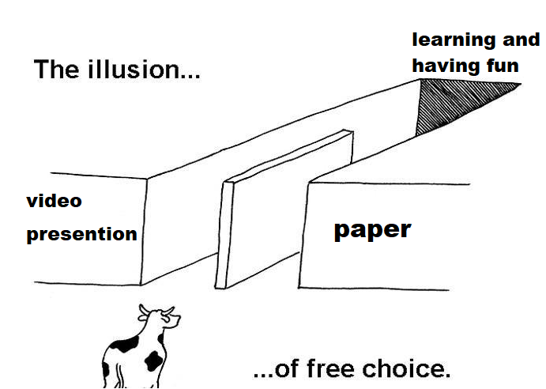

Security Research Project
Due Sunday April 23rd
Overview
We cant cover all the different areas of security in this class. This project is designed for you to research an interesting topic in security of your choice. You have the choice of writing a paper, or creating a video presentation of your topic. You can submit your research project at any point during the semester.
Rules
Generally, most security topics are fair game, but there are a few ground rules.
Instructions

Partners are NOT allowed and you CANT use a late pass on this assignment. There are two options for the research project. You must select one.
I. Paper
You will write at least a 4 page paper (double spaced) about your topic. In your paper, you should include at least 3 references from some online or physical source. You should
at least address the following topics in your paper:
- Introduction- Clearly state your topic and its relevancy/importance in cybersecurity. If this is a recent cybersecurity topic, has it appeared in the news recently?
- Background- Any necessary background on concepts, related projects, or literature that are necessary to understand your project.
- System/Methodology- Deep dive into specifics of your topic: how it works, when it would be used, defense mechanisms, severity, etc. This section will vary depending on what your topic is
- Conclusion and future work- What is the takeaway for your paper? What was learned? What does the future look like? Is research still being done around your topic?
- References- You should at least have 3 references. Use whatever citation format you would like
II. Video Presentation
You will create a video presentation that is accompanied by a powerpoint/slide deck. Your presentation should be at least 6 minutes long. You should
at least address the following topics in your presentation:
- Introduction-Clearly state your topic and its relevancy/importance in cybersecurity. If this is a recent cybersecurity topic, has it appeared in the news recently?
- Background-Any necessary background on concepts, related projects, or literature that are necessary to understand your project.
- System/Methodology- Deep dive into specifics of your topic: how it works, when it would be used, defense mechanisms, severity, etc. This section will vary depending on what your topic is
- Conclusion and future work- What is the takeaway for your paper? What was learned? What does the future look like? Is research still being done around your topic?
You will need to have a powerpoint/slide deck to go along with your video presentation. Your powerpoint should include at least one graphic that helps explain a topic (you can create this yourself or find one online). A demo of your topic is not required, but it would make the presentation more interesting 😊. When you are ready, you will record your presentation and post it on Youtube or Panopto.
III. Other
Do you have an idea for a different type of project format you would like to pursue, such as a coding/technical-related project? Go talk to Reese about it! He might allow you to do it.
Ideas
There are many possible topics out there. Do some googling and find a topic that sounds interesting! If you are struggling to find topics,
here is a list of projects that have been done in the past.
Submission
You can submit your project at any point in the semester. The dropbox closes on Sunday, April 23rd at 11:59 PM. You are only allowed one submission.
If you are writing a paper, submit your paper to D2L as a PDF.
If you are creating a video presentation, submit your powerpoint/slides as a PDF and include your video link in the D2L comment box.
Grading
Every couple weeks, Reese will look at ungraded submissions on D2L and provide a grade.
Paper Rubric
| Requirement |
Points |
| Your paper has an introduction section that clearly states your topic and its relevancy/importance |
10 |
| Your paper has a background section that describes any relevant background information needed to understand your topic |
20 |
| Your paper has a system/methodology section that describes the technical, inner-workings of your topic (this should be the bulk of your presentation) |
40 |
| Your paper has a conclusion/future work section that provides closure while reminding the reader the importance of your topic |
15 |
| You have a reference page with at least 3 sources (any citation format is fine) |
5 |
| Your paper is at least 4 pages (not including the reference page) and contains minimal spelling and grammar errors |
10 |
Presentation Rubric
| Requirement |
Points |
| Your presentation has an introduction section that clearly states your topic and its relevancy/importance |
10 |
| Your presentation has a background section that describes any relevant background information needed to understand your topic |
20 |
| Your presentation has a system/methodology section that describes the technical, inner-workings of your topic (this should be the bulk of your paper) |
40 |
| Your presentation has a conclusion/future work section that provides closure while reminding the reader the importance of your topic |
15 |
| Your presentation includes at least one graphic that helps the listener understand your topic easier |
5 |
| Your presentation is at least 6 minutes and includes slides that contain minimal grammar/spelling errors |
10 |